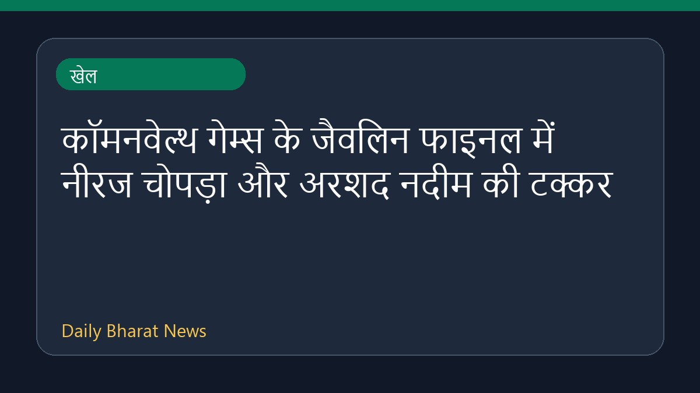

कॉमनवेल्थ गेम्स के जैवलिन फाइनल में नीरज चोपड़ा और अरशद नदीम की टक्कर

कॉमनवेल्थ गेम्स 2026 के भाला फेंक फाइनल में नीरज चोपड़ा और पाकिस्तान के अरशद नदीम के बीच एक बार फिर रोमांचक मुकाबला देखने को मिलेगा। इस स्पर्धा के फाइनल में पाथिरागे भी इस प्रतिद्वंद्विता को चुनौती देते नजर आएंगे। भारत के नीरज चोपड़ा ने फाइनल में अपनी जगह पक्की कर ली है, उनके साथ रोहित और यशवीर ने भी फाइनल के लिए क्वालीफाई कर लिया है। इन एथलीटों के शानदार प्रदर्शन से भारत की पदक जीतने की उम्मीदें काफी बढ़ गई हैं, और खेल प्रेमियों को एक बार फिर से ऐतिहासिक मुकाबले की पूरी उम्मीद है।
मूल स्रोत: Sports News Sources
Pathirage challenges Chopra-Nadeem javelin rivalry in Commonwealth final - Al Jazeera ↗
Pathirage challenges Chopra-Nadeem javelin rivalry in Commonwealth final - Al Jazeera ↗